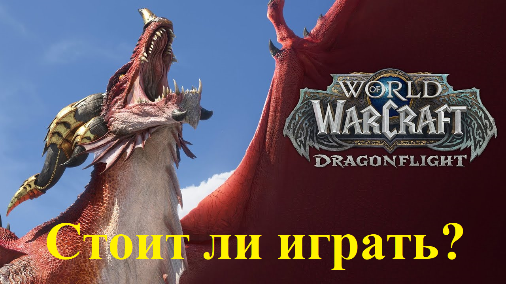

Немного про Blizzard:
Надо отметить что на фоне скандалов в Activision Blizzard и застоя в игре игроки массово уходят из WoW на пиратские сервера или альтернативные проекты а сами Activision Blizzard были проданы Microsoft за 80млрд$. Сейчас в WoW активно играют около 1млн человек но из за санкций со стороны Activision Blizzard в СНГ регионах стало невозможным совершать покупку дополнения и игрового времени к World of Warcraft в магазине Blizzard вседствие этого в Ru сегменте игры пользователей становится всё меньше и меньше.
Как выглядит World of Warcraft в 2022году:
На данный момент в World of Warcraft актуальным дополнение является Shadowlands "конец вечности" версии 9.2.0 но недавно Blizzard анонсировали новое дополнение к игре WoW Dragonflight открывающее новою зону:"драконьи острова" и многие другие новые механики появющиеся в Dragonflight.Но всё же покачто актуальная версия игры остаются Shadowlands и у многих главным остаётся вопрос: а стоит ли играть в World of Warcraft в 2022 году? На данный момент чтобы поиграть в Wow вам нужно преобрести дополнение за 1999₽ и подписку за 649₽/мес. Причём хочу заметить что вам необезательно что то покупать. Если вы не купите подписку и дополнение вы сможете играть в ограниченом режиме и с множеством ограничений так что рекомендуется купить подписку для нормальной игры. Дополнение лишь даёт дополнительный контент в котором проходит большенство событий.
Где начать играть:
В данный момент официально купить World of Warcraft и подписку к нему нельзя и тут есть только два варианта либо идти на пиратский сервер либо выкручиватся и преобретать WoW разнообразными способами. Рассмотрим их плюсы и минусы